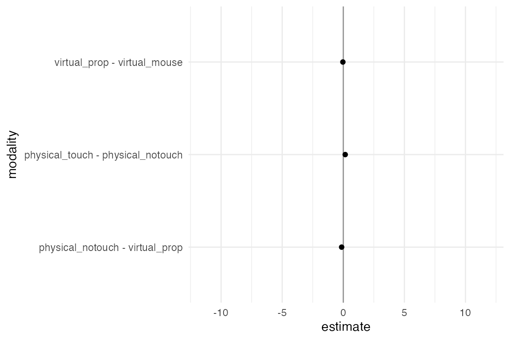

Example multiverse implementation: Re-evaluating the efficiency of physical visualizations
Pierre Dragicevic
Yvonne Jansen
Abhraneel Sarma
2024-08-01
Source:vignettes/example-frequentist.Rmd
example-frequentist.Rmd
library(dplyr)
library(tidyr)
library(ggplot2)
library(purrr)
library(broom)
library(gganimate)
library(multiverse)Multiverse case study #2
In this vignette, we will recreate the multiverse analysis, Re-evaluating the efficiency of Physical Visualisations, performed by Dragicevic et al. in Increasing the transparency of research papers with explorable multiverse analyses using the package.
Introduction
The original study investigated the effects of moving 3D data visualizations to the physical world and found that it can improve users’ efficiency at information retrieval tasks. The original study consisted of two experiments. Dragicevic et al. only re-analyze the second experiment, whose goal was to better understand why physical visualizations appear to be superior.
The data
The experiment involved an “enhanced” version of the on-screen 3D chart and an “impoverished” version of the physical 3D chart. The enhanced on-screen chart was rotated using a 3D-tracked tangible prop instead of a mouse. The impoverished physical chart consisted of the same physical object but participants were instructed not to use their fingers for marking. There were 4 conditions:
- physical touch: physical 3D bar charts where touch was explicitly encouraged in the instructions.
- physical no touch: same charts as above except subjects were told not to use their fingers to mark points of interest (labels and bars).
- virtual prop: on-screen 3D bar charts with a tangible prop for controlling 3D rotation.
- virtual mouse: same charts as above, but 3D rotation was mouse-controlled.
These manipulations were meant to answer three questions:
- how important is direct touch in the physical condition?
- how important is rotation by direct manipulation?
- how important is visual realism? Visual realism referred to the higher perceptual richness of physical objects compared to on-screen objects, especially concerning depth cues.
We load the data for this study which is contained in
data(userlogs) in the multiverse package.
## subject group formerSubject conditionrank modality modalityname repetition
## 1 4 4 no 1 4 virtual-mouse 1
## 2 4 4 no 1 4 virtual-mouse 1
## 3 4 4 no 1 4 virtual-mouse 1
## 4 4 4 no 1 4 virtual-mouse 1
## 5 4 4 no 1 4 virtual-mouse 2
## 6 4 4 no 1 4 virtual-mouse 2
## question trial datasetname readingTime error duration perceivedDifficulty
## 1 1 1 army 26 0 44.5686 2
## 2 2 2 army 10 0 120.6228 4
## 3 3 3 army 2 0 99.4174 3
## 4 4 4 army 19 0 53.7313 3
## 5 1 5 externaldebt 12 1 62.6189 3
## 6 2 6 externaldebt 20 0 59.1863 2
## perceivedTime
## 1 42
## 2 81
## 3 95
## 4 66
## 5 59
## 6 48Analysis #1: Mean and Confidence Intervals for each condition
In this vignette, we are primarily concerned with the variables:
duration and modality, as the focus of this
analysis is on task completion times.
The first (default) analysis is a one-sided t-test to estimate the means and 95% confidence intervals of the log-transformed task completion time (duration). Since, task completion times are strictly positive, and may have a long tail, this decision makes sense. However, it may be reasonable to use the untransformed data as well. On the other hand, it is also reasonable to use a bootstrap test instead of a t-test.
This results in four possible analysis combinations, two each for data transformation (log and untransformed), and model (t-test and BCa bootstrap).
Average task completion time (arithmetic mean) for each condition.
We need a few helper functions to so that they take the same arguments and return the same output.These functions will help us calculate the mean point estimate and the upper and lower bounds of the 95% confidence interval using the bootstrap method and t-test method.
bootstrappedCI <- function(observations, conf.level, seed = 0) {
samplemean <- function(x, d) {return(mean(x[d]))}
pointEstimate <- samplemean(observations)
if (!(is.na(seed) | is.null(seed))){
set.seed(seed) # make deterministic
}
bootstrap_samples <- boot::boot(data = observations, statistic = samplemean, R = 5000)
bootci <- boot::boot.ci(bootstrap_samples, type = "bca", conf = conf.level)
c(pointEstimate, bootci$bca[4], bootci$bca[5])
}
tCI <- function(observations, conf.level) {
pointEstimate <- mean(observations)
sampleSD <- sd(observations)
sampleN <- length(observations)
sampleError <- qt(1-(1-conf.level)/2, df = sampleN-1) * sampleSD/sqrt(sampleN)
c(pointEstimate, pointEstimate - sampleError, pointEstimate + sampleError)
}Next we initialise the multiverse object within which this analysis will take place.
M = multiverse()Now we define the parameters we want to consider in the multiverse:
confidence interval method (ci_method) and data
transformation method (data_transform). We also define a
parameter for confidence level, as the choice of a 95% confidence level
is arbitrary and we can choose to instead present our results with
alternate confidence levels. Here we vary between: 50%, 89%, 95%, and
99.9%. Thus our multiverse consists of: 2 \(\times\) 2 \(\times\) 7 different analysis
combinations.
Note
In this vignette, we make use of multiverse
code chunks, a custom engine designed to work with the
multiverse package, to implement the multiverse analyses. Please refer
to the vignette (vignette("multiverse-in-rmd")) for more
details. Users could instead make use of the function which is more
suited for a script-style implementation. Please refer to the vignettes
(vignette("example-durante")) for more details.
ci_method <- branch(
ci_method,
"t based" ~ "tCI",
"bootstrap" ~ "bootstrappedCI"
)
data_transform <- branch(
data_transform,
"log-transformed" ~ log,
"untransformed" ~ identity
)
conf_level <- branch(
conf_level,
"50%" ~ 0.5,
"67" ~ 0.67,
"95%" ~ 0.95,
"99%" ~ 0.99
)```{multiverse default-m-1, inside = M}
ci_method <- branch(ci_method,
"t based" ~ "tCI",
"bootstrap" ~ "bootstrappedCI"
)
data_transform <- branch(data_transform,
"log-transformed" ~ log,
"untransformed" ~ identity
)
conf_level <- branch(conf_level,
"50%" ~ 0.5,
"89" ~ 0.89,
"95%" ~ 0.95,
"99%" ~ 0.99
)
```We now look at the multiverse table and see that it has created all the possible combinations:
expand(M)## # A tibble: 16 × 8
## .universe ci_method data_transform conf_level .parameter_assignment
## <int> <chr> <chr> <chr> <list>
## 1 1 t based log-transformed 50% <named list [3]>
## 2 2 t based log-transformed 67 <named list [3]>
## 3 3 t based log-transformed 95% <named list [3]>
## 4 4 t based log-transformed 99% <named list [3]>
## 5 5 t based untransformed 50% <named list [3]>
## 6 6 t based untransformed 67 <named list [3]>
## 7 7 t based untransformed 95% <named list [3]>
## 8 8 t based untransformed 99% <named list [3]>
## 9 9 bootstrap log-transformed 50% <named list [3]>
## 10 10 bootstrap log-transformed 67 <named list [3]>
## 11 11 bootstrap log-transformed 95% <named list [3]>
## 12 12 bootstrap log-transformed 99% <named list [3]>
## 13 13 bootstrap untransformed 50% <named list [3]>
## 14 14 bootstrap untransformed 67 <named list [3]>
## 15 15 bootstrap untransformed 95% <named list [3]>
## 16 16 bootstrap untransformed 99% <named list [3]>
## # ℹ 3 more variables: .code <list>, .results <list>, .errors <list>We then actually perform the steps within the multiverse to get results from the different possible combinations of analysis options. First, we perform the data transformation operation within the multiverse. This will result in the data being appropriately transformed (log or identity) in the corresponding multiverse.
```{multiverse default-m-2, inside = M}
duration <- do.call(data_transform, list(data.userlogs.raw$duration))
```Next, we calculate the mean point estimates and 95% confidence
intervals for each condition in the experiment. We also need to format
the data so that the results could be neatly stored in a
data.frame. We strongly recommend sorting the results that
you would wish to extract from the multiverse in a
data.frame as that would make it much easier for analysing
and visualising the results.
modality <- data.userlogs.raw$modalityname
ci.physical_notouch <- do.call(ci_method, list(duration[modality == "physical-notouch"], conf_level))
ci.physical_notouch <- setNames(as.list(c("physical_notouch", ci.physical_notouch)), c("modality", "estimate", "conf.low", "conf.high"))
ci.physical_touch <- do.call(ci_method, list(duration[modality == "physical-touch"], conf_level))
ci.physical_touch <- setNames(as.list(c("physical_touch", ci.physical_touch)), c("modality", "estimate", "conf.low", "conf.high"))
ci.virtual_prop <- do.call(ci_method, list(duration[modality == "virtual-prop"], conf_level))
ci.virtual_prop <- setNames(as.list(c("virtual_prop", ci.virtual_prop)), c("modality", "estimate", "conf.low", "conf.high"))
ci.virtual_mouse <- do.call(ci_method, list(duration[modality == "virtual-mouse"], conf_level))
ci.virtual_mouse <- setNames(as.list(c("virtual_mouse", ci.virtual_mouse)), c("modality", "estimate", "conf.low", "conf.high"))
df <- rbind.data.frame(ci.physical_notouch, ci.physical_touch, ci.virtual_prop, ci.virtual_mouse, make.row.names = FALSE, stringsAsFactors = FALSE)
df <- transform(df, estimate = as.numeric(estimate), conf.low = as.numeric(conf.low), conf.high = as.numeric(conf.high))```{multiverse default-m-3, inside = M}
modality <- data.userlogs.raw$modalityname
ci.physical_notouch <- do.call(ci_method, list(duration[modality == 'physical-notouch'], conf_level))
ci.physical_notouch <- setNames(as.list(c("physical_notouch", ci.physical_notouch)), c("modality", "estimate", "conf.low", "conf.high"))
ci.physical_touch <- do.call(ci_method, list(duration[modality == 'physical-touch'], conf_level))
ci.physical_touch <- setNames(as.list(c("physical_touch", ci.physical_touch)), c("modality", "estimate", "conf.low", "conf.high"))
ci.virtual_prop <- do.call(ci_method, list(duration[modality == 'virtual-prop'], conf_level))
ci.virtual_prop <- setNames(as.list(c("virtual_prop", ci.virtual_prop)), c("modality", "estimate", "conf.low", "conf.high"))
ci.virtual_mouse <- do.call(ci_method, list(duration[modality == 'virtual-mouse'], conf_level))
ci.virtual_mouse <- setNames(as.list(c("virtual_mouse", ci.virtual_mouse)), c("modality", "estimate", "conf.low", "conf.high"))
df <- rbind.data.frame(ci.physical_notouch, ci.physical_touch, ci.virtual_prop, ci.virtual_mouse, make.row.names = FALSE, stringsAsFactors = FALSE)
df <- transform(df, estimate = as.numeric(estimate), conf.low = as.numeric(conf.low), conf.high = as.numeric(conf.high))
```Since the multiverse only executes the default analysis, we then run the following command to run all the analysis that we have defined in the multiverse.
Results #1
Extracting the results from the multiverse object
Next, we need to extract the results from the multiverse. The results
for each unique analysis combination (a universe in our multiverse), is
stored in an environment in the .results column. We can
extract data frames from this column using the function. This creates a
new column in our data frame, summary which itself consists
of data frames.
## # A tibble: 6 × 9
## .universe ci_method data_transform conf_level .parameter_assignment
## <int> <chr> <chr> <chr> <list>
## 1 1 t based log-transformed 50% <named list [3]>
## 2 2 t based log-transformed 67 <named list [3]>
## 3 3 t based log-transformed 95% <named list [3]>
## 4 4 t based log-transformed 99% <named list [3]>
## 5 5 t based untransformed 50% <named list [3]>
## 6 6 t based untransformed 67 <named list [3]>
## # ℹ 4 more variables: .code <list>, .results <list>, .errors <list>,
## # summary <list>As we can see above, each row in the summary column
consists of a \(4 \times 4\), data
frame which we will need to unpack. We will use the function to expand
the different columns of the data frame into their own columns. Finally,
we use the function to unnest the rows of the data frame into their own
row. Note that we have a .universe column which indexes
each universe in our multiverse i.e. each unique analysis
combination.
Below we can see the result of this transformation. You can see that
we have created four new columns (modality,
estimate, conf.low, conf.high).
In addition, we have four rows for each universe corresponding to the
results for each of the four conditions in our experiment.
df.mtbl <- unnest_wider(df.mtbl, c(summary))
df.mtbl <- unnest(df.mtbl, cols = c(modality, estimate, conf.low, conf.high))
head(df.mtbl)## # A tibble: 6 × 12
## .universe ci_method data_transform conf_level .parameter_assignment
## <int> <chr> <chr> <chr> <list>
## 1 1 t based log-transformed 50% <named list [3]>
## 2 1 t based log-transformed 50% <named list [3]>
## 3 1 t based log-transformed 50% <named list [3]>
## 4 1 t based log-transformed 50% <named list [3]>
## 5 2 t based log-transformed 67 <named list [3]>
## 6 2 t based log-transformed 67 <named list [3]>
## # ℹ 7 more variables: .code <list>, .results <list>, .errors <list>,
## # modality <chr>, estimate <dbl>, conf.low <dbl>, conf.high <dbl>Visualising the results
We will then sort the results, and transform the log transformed variables back on to the natural scale. We are then ready to visualise the result by animating over each universe.
df.mtbl <- arrange(df.mtbl, conf_level, desc(data_transform), desc(ci_method))
df.results <- df.mtbl
df.results$estimate[df.mtbl$data_transform == "log-transformed"] = exp(df.mtbl$estimate[df.mtbl$data_transform == "log-transformed"])
df.results$conf.low[df.mtbl$data_transform == "log-transformed"] = exp(df.mtbl$conf.low[df.mtbl$data_transform == "log-transformed"])
df.results$conf.high[df.mtbl$data_transform == "log-transformed"] = exp(df.mtbl$conf.high[df.mtbl$data_transform == "log-transformed"])
df.results %>% head()## # A tibble: 6 × 12
## .universe ci_method data_transform conf_level .parameter_assignment
## <int> <chr> <chr> <chr> <list>
## 1 5 t based untransformed 50% <named list [3]>
## 2 5 t based untransformed 50% <named list [3]>
## 3 5 t based untransformed 50% <named list [3]>
## 4 5 t based untransformed 50% <named list [3]>
## 5 13 bootstrap untransformed 50% <named list [3]>
## 6 13 bootstrap untransformed 50% <named list [3]>
## # ℹ 7 more variables: .code <list>, .results <list>, .errors <list>,
## # modality <chr>, estimate <dbl>, conf.low <dbl>, conf.high <dbl>
p <- df.results %>%
ggplot() +
geom_vline( xintercept = 0, colour = '#979797' ) +
geom_point( aes(x = estimate, y = modality)) +
geom_errorbarh( aes(xmin = conf.low, xmax = conf.high, y = modality), height = 0) +
transition_manual( .universe ) +
theme_minimal()
animate(p, nframes = 28, fps = 2)## `nframes` and `fps` adjusted to match transitionThe figure above shows the (geometric) mean completion time for each condition. At first sight, physical touch appears to be consistently faster than the other conditions, across all possible analysis combinations specified in the multiverse. However, since condition is a within-subject factor, it is preferable to examine within-subject differences, which we show in the next section.
Sidebar: Using the tidyverse to extract and visualize the results
So far we have tried to keep this analysis in base R. However, the
steps involved in extracting and visualising results from the multiverse
maybe more convenient for some using the tidyverse API. We can implement
the steps that we have taken in the previous three code block in the
following way using the tidyverse. The result of this is the same data
frame that was created in the previous step, and was used as input data
to ggplot, df.results. The multiverse package
is flexible, and does not restrict you towards a particular style of R
programming.
expand(M) %>%
mutate( summary = map(.results, "df") ) %>%
unnest_wider( c(summary)) %>%
unnest(cols = c(modality, estimate, conf.low, conf.high)) %>%
mutate(
estimate = ifelse(data_transform == "log-transformed", exp(estimate), estimate),
conf.low = ifelse(data_transform == "log-transformed", exp(conf.low), conf.low),
conf.high = ifelse(data_transform == "log-transformed", exp(conf.high), conf.high)
) %>%
arrange(conf_level, desc(data_transform), desc(ci_method))## # A tibble: 64 × 12
## .universe ci_method data_transform conf_level .parameter_assignment
## <int> <chr> <chr> <chr> <list>
## 1 5 t based untransformed 50% <named list [3]>
## 2 5 t based untransformed 50% <named list [3]>
## 3 5 t based untransformed 50% <named list [3]>
## 4 5 t based untransformed 50% <named list [3]>
## 5 13 bootstrap untransformed 50% <named list [3]>
## 6 13 bootstrap untransformed 50% <named list [3]>
## 7 13 bootstrap untransformed 50% <named list [3]>
## 8 13 bootstrap untransformed 50% <named list [3]>
## 9 1 t based log-transformed 50% <named list [3]>
## 10 1 t based log-transformed 50% <named list [3]>
## # ℹ 54 more rows
## # ℹ 7 more variables: .code <list>, .results <list>, .errors <list>,
## # modality <chr>, estimate <dbl>, conf.low <dbl>, conf.high <dbl>Analysis #2: Differences between mean completion times between conditions
Next, we compute the pairwise ratios between mean completion times to examine the within-subject differences.
diff.touch_notouch <- duration[modality == "physical-notouch"] - duration[modality == "physical-touch"]
`physical_touch - physical_notouch` <- do.call(ci_method, list(diff.touch_notouch, conf_level))
`physical_touch - physical_notouch` <- setNames(as.list(c("physical_touch - physical_notouch", `physical_touch - physical_notouch`)), c("modality", "estimate", "conf.low", "conf.high"))
diff.notouch_prop <- duration[modality == "physical-notouch"] - duration[modality == "virtual-prop"]
`physical_notouch - virtual_prop` <- do.call(ci_method, list(diff.notouch_prop, conf_level))
`physical_notouch - virtual_prop` <- setNames(as.list(c("physical_notouch - virtual_prop", `physical_notouch - virtual_prop`)), c("modality", "estimate", "conf.low", "conf.high"))
diff.propr_mouse <- duration[modality == "virtual-prop"] - duration[modality == "virtual-mouse"]
`virtual_prop - virtual_mouse` <- do.call(ci_method, list(diff.propr_mouse, conf_level))
`virtual_prop - virtual_mouse` <- setNames(as.list(c("virtual_prop - virtual_mouse", `virtual_prop - virtual_mouse`)), c("modality", "estimate", "conf.low", "conf.high"))
df.diffs <- rbind.data.frame(`physical_touch - physical_notouch`, `physical_notouch - virtual_prop`, `virtual_prop - virtual_mouse`, make.row.names = FALSE, stringsAsFactors = FALSE)
df.diffs <- transform(df.diffs, estimate = as.numeric(estimate), conf.low = as.numeric(conf.low), conf.high = as.numeric(conf.high))```{multiverse default-m-4, inside = M}
diff.touch_notouch <- duration[modality == 'physical-notouch'] - duration[modality == 'physical-touch']
`physical_touch - physical_notouch` <- do.call(ci_method, list(diff.touch_notouch, conf_level))
`physical_touch - physical_notouch` <- setNames(as.list(c("physical_touch - physical_notouch", `physical_touch - physical_notouch`)), c("modality", "estimate", "conf.low", "conf.high"))
diff.notouch_prop <- duration[modality == 'physical-notouch'] - duration[modality == 'virtual-prop']
`physical_notouch - virtual_prop` <- do.call(ci_method, list(diff.notouch_prop, conf_level))
`physical_notouch - virtual_prop` <- setNames(as.list(c("physical_notouch - virtual_prop", `physical_notouch - virtual_prop`)), c("modality", "estimate", "conf.low", "conf.high"))
diff.propr_mouse <- duration[modality == 'virtual-prop'] - duration[modality == 'virtual-mouse']
`virtual_prop - virtual_mouse` <- do.call(ci_method, list(diff.propr_mouse, conf_level))
`virtual_prop - virtual_mouse` <- setNames(as.list(c("virtual_prop - virtual_mouse", `virtual_prop - virtual_mouse`)), c("modality", "estimate", "conf.low", "conf.high"))
df.diffs <- rbind.data.frame(`physical_touch - physical_notouch`, `physical_notouch - virtual_prop`, `virtual_prop - virtual_mouse`, make.row.names = FALSE, stringsAsFactors = FALSE)
df.diffs <- transform(df.diffs, estimate = as.numeric(estimate), conf.low = as.numeric(conf.low), conf.high = as.numeric(conf.high))
```We then execute all the other analysis combinations (universes) in our multiverse.
We can output the data frame that we have created inside the multiverse code block, as we would for a data frame in R. This would output the result in the default universe () of the multiverse. We can see that this data frame, as intended, has computed the mean differences and 95% confidence intervals between the conditions we care about.
```{multiverse default-m-5, inside = M}
df.diffs
```## modality estimate conf.low conf.high
## 1 physical_touch - physical_notouch 0.15764964 0.13052972 0.1847696
## 2 physical_notouch - virtual_prop -0.13555912 -0.16176768 -0.1093506
## 3 virtual_prop - virtual_mouse -0.03398807 -0.05599883 -0.0119773Extracting and visualizing the results from the multiverse
We then use the workflow described in the previous section to extract results for each universe in the multiverse. We then use gganimate to plot the results.
df.results.diff <- expand(M) %>%
extract_variables(df.diffs) %>%
unnest(c(df.diffs)) %>%
arrange(desc(data_transform), conf_level, desc(ci_method))
df.results.diff %>%
head()## # A tibble: 6 × 12
## .universe ci_method data_transform conf_level .parameter_assignment
## <int> <chr> <chr> <chr> <list>
## 1 5 t based untransformed 50% <named list [3]>
## 2 5 t based untransformed 50% <named list [3]>
## 3 5 t based untransformed 50% <named list [3]>
## 4 13 bootstrap untransformed 50% <named list [3]>
## 5 13 bootstrap untransformed 50% <named list [3]>
## 6 13 bootstrap untransformed 50% <named list [3]>
## # ℹ 7 more variables: .code <list>, .results <list>, .errors <list>,
## # modality <chr>, estimate <dbl>, conf.low <dbl>, conf.high <dbl>Results #2
A value lower than 1 (i.e., on the left side of the dark line) means the condition on the left is faster than the condition on the right. The confidence intervals are not corrected for multiplicity. The results from this study appear to be relatively robust and consistent across all the possible combinations that we have tried.
p <- df.results.diff %>%
ggplot() +
geom_vline( xintercept = 0, colour = '#979797' ) +
geom_point( aes(x = estimate, y = modality)) +
geom_errorbarh( aes(xmin = conf.low, xmax = conf.high, y = modality), height = 0) +
transition_manual( .universe ) +
theme_minimal()
animate(p, nframes = 28, fps = 4)## `nframes` and `fps` adjusted to match transition
Correction for multiplicity can be another analysis option in the multiverse analysis. Since the individual confidence level is 95%, an interval that does not contain the value 1 indicates a statistically significant difference at the α = .05 level. The probability of getting at least one such interval if all 3 population means were zero (i.e., the family-wise error rate) is α=.14. Likewise, the simultaneous confidence level is 86%, meaning that if we replicate our experiment over and over, we should expect the 3 confidence intervals to capture all 3 population means 86% of the time.
Conclusion
This example was adapted from Dragicevic et al.’s study Increasing the transparency of research papers with explorable multiverse analyses to show how previously performed multiverse analysis can be reproduced using the package in a flexible, and easily readable manner. It also shows how a multiverse analysis can be implemented in mostly base R syntax.